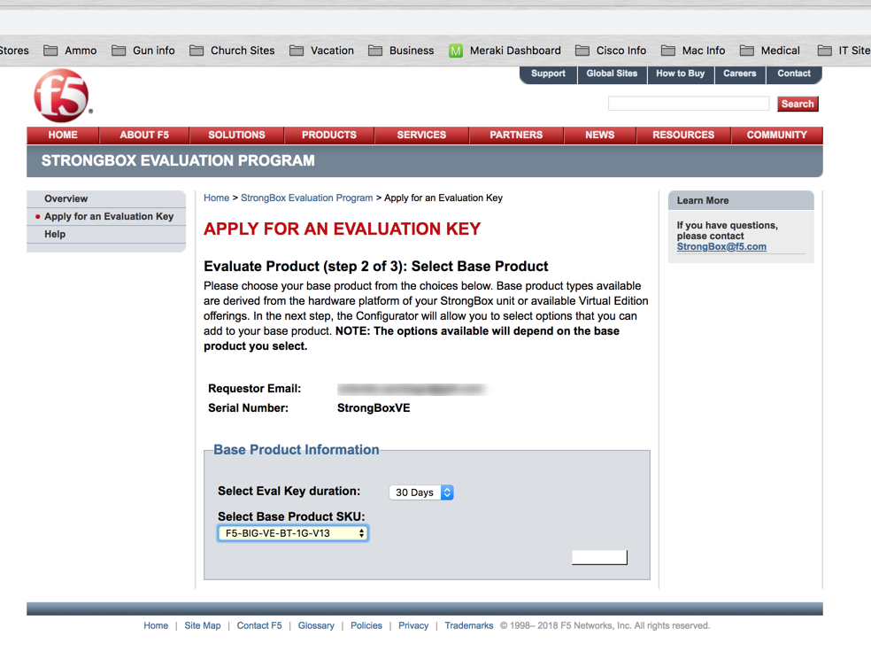
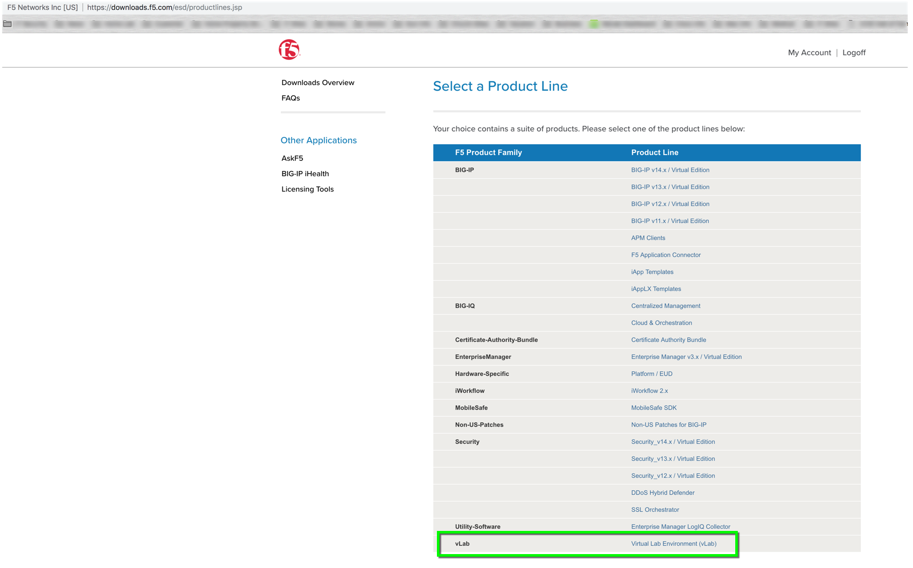
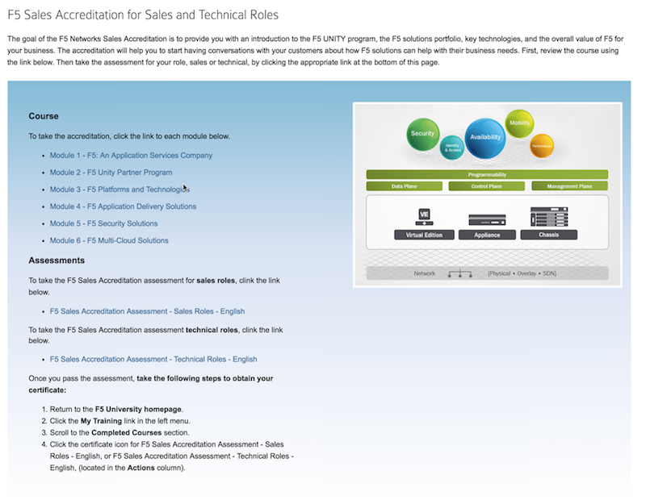

Unofficial - F5 Certification Exam Prep Material > F5 202 - Pre-Sales Fundamentals Study Guide 11/01/19 Source | Edit on
Section 5 - Ongoing support/maintenance¶
Objective - 5.01 Given a scenario, understand organizational personas to best position F5 solutions¶
5.01 - Determine buying powers, influencers, and purchasing cycles
This blueprint topic is related to choosing the correct answer for a scenario type of question. You will determine the stake holders in purchasing decisions for F5 products. Review the battle cards for products located on the Sales Play link on the partners site. These battle cards contain information on how to identify your target customer and stake holders for specific F5 products.
https://partners.f5.com/solutions/f5-sales-plays
Partners Sales Play Site
A sales play is designed to help F5 Channel Partners position F5 solutions for a specific customer need. Each sales play includes a set of materials designed for training that will prepare and help you position F5 solutions that will drive an end-to-end sale. The content of the sales play includes the sales playbook, customer facing deck and other associated documentation such as whiteboards, demos and/or collateral to help support the sales pitch.
DDoS Battlecard
Learn more about selling F5 Hybrid DDoS and share the value of F5 as the only single-vendor who seamlessly integrates on-premises DDoS solutions and cloud scrubbing services. F5 delivers complete DDoS coverage with our BIG-IP appliances in the datacenter and Silverline DDoS Protection managed services. This flexible, hybrid, solution combines granular threat detection with always-on or on-demand high mitigation capacity in the cloud. Companies also benefit from 24x7x365 expert monitoring and support to augment resources when under a volumetric attack. Discover and leverage the tools for selling F5 DDoS solutions and help your customers stay ahead of the fight against DDoS.
Web Application Firewall Battlecard
Learn more about showing prospects the value of F5 Web Application Firewall capabilities. Share BIG-IP ASM the #1 most deployed and #1 most effective WAF in class to solve critical app security needs on prem. and across hybrid cloud. For tier 2 apps on prem. and cloud-based applications, share Silverline Web Application Firewall designed on BIG-IP ASM for complete app protection managed by a 24x7x365 SOC team for prospects without IT resources. Share the combined F5 Hybrid WAF solution offerings to cover all apps enabling no app left unprotected.
5.01 - Distinguish needs of buying powers and influencers
You cannot expect that you are the only one that has influence on the buyer in your prospective customer. There are many different influencers. This article from LinkedIn has a great perspective of how influencers can impact your sales opportunities.
Influencer Impact at Each Stage of the Deal
It’s important to understand how various influencers affect your deal at different stages of the purchase process. While it is impossible to distill this to a one-size-fits-all mapping, we can make some useful generalizations.
An effective practice is to review the type of content buyers seek at each stage of the purchase journey and map these content types to the field of external influencers. After all, content is simply an information vehicle, just as influencers are an information source.
In the early stage, buyers usually seek out thought leadership and educational content. As such, they will consult external experts who can inform their understanding of top issues and trends during cursory research. These could include analysts, subject matter experts, and thought leaders. As a result, top-of-funnel prospects might come to the table with preconceived notions they gathered from one or more industry influencers.
Early-Stage Influence Takeaway:
Become familiar with respected authorities in your niche and keep a bead on their content or social media updates to better understand viewpoints and perspectives that might be instilled in your prospects.
Prospects in the middle stage want to evaluate and narrow down their options. At this point, they consume more product-specific content along with case studies, comparisons, and evaluation guides. According to research by Influitive, nearly 90% of buyers are influenced by customer testimonials during the purchase decision.
When consulting internal influencers at this stage, prospects often call upon those can help evaluate both business and technical details, such as IT and engineering. For external perspectives, they might turn to respected peers, partners, and customers of the vendor under consideration.
Middle-Stage Influence Takeaway:
Customer testimonials and peer reviews are key as buyers begin to narrow their options and gravitate toward a decision.
In the final stage of their journey, buyers need to validate their purchase decision. They vet their choice through content such as demos, total cost of ownership, and ROI calculators. It is common at this point to again enlist the input of peers, partners, and existing customers. Additionally, buyers will seek to generate consensus on the purchase committee, and throughout the organization. So, lower-funnel prospects might be influenced by operations colleagues, technology stakeholders, user-level team members, and the finance group.
Late-Stage Influence Takeaway:
Expanding your own influence across the buying committee and in other relevant areas of the organization can help solidify consensus.
Position Yourself to Swing the Balance in Your Favor
In addition to decision makers, hidden influencers can hold sway in the ultimate purchase choice. They can impact whether a large deal is awarded to you or a competitor — or whether the status quo prevails. Failing to build strong ties to even one of these influencers could lead to the collapse of important deals.
The more connections you establish within and beyond a prospect’s company, and the more you interact with these people on social media, the more fully you’ll understand how various decision makers and influencers work together.
This approach empowers you to make the most of influence arriving from any direction.
5.01 - Recommend training/enablement based on operational needs
https://www.f5.com/services/training
Training and Enablement
Customers will normally need training and enablement on the F5 solutions that they are utilizing in their environments. You should be aware of the available training and how/where to access the different types.
Instructor-led courses
F5 courses are available in multiple training facilities across five continents. Each one combines instructor presentations, classroom discussions and interactive labs. The hands-on learning environment helps provide a fast track to accomplishing your goals.
Subscription training
F5 offers Subscription based training delivered as e-learning. Each e-learning module contains:
- Conceptual video: a quick introduction to the feature, including recommendations with tips and tricks
- Requirements, process overview, and detailed content
- A curated list of related resources
Free online training
You can use the self-paced Getting Started series of free, web-based courses to learn how to deploy F5 solutions to address your most common application delivery problems:
- Securing your web applications
- Scaling, securing and optimizing your DNS infrastructure
- Implementing a unified, context-aware, policy-based solution for access to your corporate network resources
- Directly manipulating and managing your application traffic to align with your business rules
Each course lasts about 45 minutes and provides a thorough introduction to the solution and what it feels like to configure and operate it in the real-world.
Objective - 5.02 Given a scenario, determine when to engage appropriate F5 employees¶
5.02 - Utilize SMEs during technical activities
There will be times where you will need to leverage the an F5 subject matter expert (SME) who has a deep understanding of the F5 products. When performing a Proof-of-Concept for a customer or if you are trying to size an F5 product to fit the customers environment, you will need to work with the F5 account team and local Systems Engineer. If you are a partner trying to gain knowledge about how an F5 product or function works you can engage the Channel SE in your region for more information or enablement training.
5.02 - Determine when to advise a customer to engage F5 support
A sales SE needs to determine the appropriate action plan or resource to engage for F5 support. For example, if the customer has an issue during a Proof of Concept (POC) or other presales activity, then the local F5 account manager and F5 Field Systems Engineer (SE) should be engaged, but if a customer has an implemented F5 solution and they are experiencing an issue, the sales engineer will need to understand how to advise the customer to open a support ticket with F5.
There are multiple ways to open a support case with F5. You can review them here in this link: https://support.f5.com/csp/article/K2633
https://www.f5.com/pdf/customer-support/guidelines-and-policies-ds.pdf
Scope of Support
F5 offers several support options, so you can be confident your organization has the level of care it needs, when it needs it.
Maintenance agreements
All F5 products come with a one-year manufacturer’s hardware warranty and a 90-day software media warranty. Technical support is limited to F5 products with active support contracts.
Contract support levels
Annual support agreements are available for Standard hours, which includes 10x5 support, or Premium hours, which includes 24x7 support. Expedited RMA Services and Maintenance Add- On Packages are also available.
iRules and iApps support
Standard and Premium support include F5 iRules scripting language and F5 iApps template assistance. Standard iRules and iApps support provides basic troubleshooting help for customers with active Standard support maintenance contracts. In addition to Standard iRules and iApps support, Premium support includes validation, troubleshooting, and functional analysis of scripted iRules and iApps templates.
To receive assistance with short-turnaround script creation requests, use the iRules OnDemandTM service, which can usually handle a request within one business day. For assistance with iApps templates, use the Consulting OnDemand service, which usually handles a request within one to two business days.
You can find additional resources for iRules assistance and iApps templates at the F5 DevCentral online community. DevCentral includes tools and techniques to help you build solutions with iRules and the F5 iControl API, enabling applications to work in concert with the underlying network. You can also find new supported iApps templates that are flexible and easy to use for deploying and managing application services.
Installation
For comprehensive installation assistance, you can purchase on-site installation services through F5 Professional Services or your local authorized F5 reseller. F5 Technical Support does not provide remote installation services.
Professional Services offerings
For assistance with planning, design, deployments, upgrades, migrations, optimization, and application verification, contact F5 Professional Services. A consultant will provide a detailed quote that includes a comprehensive Scope of Work (SOW) statement.
Network Support Centers
F5 Network Support Centers are strategically located for partners and customers in the Asia- Pacific region, Japan, Europe, the Middle East, Africa, and the Americas. Regionally located support centers enable F5 to provide support in a number of languages through native- speaking support engineers who are available when you are, during your business day. Globally dispersing Network Support Centers allows for cases to truly “follow the sun,” which means Network Support Engineers are available to provide help when you need it.
Case Severity Definitions and Response Times
All F5 Network Support Centers uphold the following case severity definitions and target response times to ensure that the appropriate resources are used to resolve all technical issues as efficiently as possible.
F5 will endeavor to respond to Severity 1 issues within one hour. Understanding that unforeseen events could delay attempts, F5 expects that most Severity 1 issues will be responded to within this service level.
Initial response is defined as the time from when the F5 case was created to when a Network Support Engineer first attempts to contact you for troubleshooting, then updates the case log to reflect this action.
Severity 1 (Urgent) Initial Response: 1 hr |
Site Down | Software or hardware conditions on your F5 device are preventing the execution of critical business activities. The device will not power up or is not passing traffic. Security issue—Critical business impact due to an attack or vulnerability. |
Severity 2 (High) Initial Response: 2 hrs |
Site at Risk | Software or hardware conditions on your F5 device are preventing or significantly impairing high-level commerce or business activities. The device is in degraded state that places your network or commerce at risk. Security issue—Severe business impact due to an attack, vulnerability, compliance, or data at risk. |
Severity 3 (Medium) Initial Response: 4 hrs |
Performance Degraded | Software or hardware conditions on your F5 device have degraded service or functionality for normal business or commerce activities. Network traffic through the device is causing some applications to be unreachable, or operate in a diminished capacity. Security issue—Potential or partial business impact related to mitigation, audit results, or vulnerability. |
Severity 4 (Low) Initial Response: 24 hrs |
General Assistance | Questions regarding configurations “how-to.” Troubleshooting non-critical issue or request for product functionality that is not currently part of the current product feature set. Security issue—General security-related questions and/or concerns which are not related to an immediate need. |
When a case is logged as Severity 1, F5 Network Support Managers are immediately notified to ensure the case is assigned within the appropriate timeframe to an appropriately skilled Network Support Engineer.
5.02 - Locate and determine appropriate resource for account/customer escalations
https://www.f5.com/services/support/support-offerings/support-policies
If at any time you believe that a case is not being handled in accordance with the service levels in your support contract, or if you wish to comment on the way a particular case is being addressed by a Network Support Engineer, please contact F5 Support and request to speak with a Technical Support Manager.
F5 has identified four escalation situations each requiring a different methodology to handle and escalate.
The first is a situation where an NSE intuitively knows that the issue could become troublesome. This could be caused by a number of things; a bug is detected, an NSE feels the situation may be beyond his/her technical depth, or it could be a matter of a customer communicating an unusual amount of agitation. We call these common sense or situational escalations. We encourage escalation to a manager or other technical resource in this scenario and depend heavily on our NSE’s common sense to determine the proper timing of the escalation.
The second is a time-based escalation. We preset alerts and reports in our call management system to use as a safety valve. This allows us to monitor proper response time, ongoing communication between all the parties and the eventual resolution of the issue.
The third is a technical escalation where due to the urgent nature of the issue events are time triggered. When a Severity 1 or 2 case is initially generated the F5 Support Manager is immediately notified via a preset alert. It is the Support Managers responsibility to escalation per the steps outlined below.
| Time | Technical Team | Action Taken |
| Immediate | NSE | Support Manager ensures resources are assigned |
| Hourly | NSE to Support Manager | Status provided |
| 4 Hours | NSE to ENE | NSE/Manager develop technical action plan - Escalate to ENE |
| 8 Hours | ENE to Product Development | Escalate to Product Development |
The fourth is a management escalation where it is in the best interest of the customer and the F5 team to communicate concerns to senior management.
| Time | Management Team | Action Taken |
| 4 Hours | Network Support Manager | Works with Technical to develop action plan |
| 4.5 Hours | Support Manager to NS Director and ENE Manager | Notification and review of plan |
| 8 Hours | NS Director to VP Global Services ENE Manager to CTO |
Escalate to Product Development |
The Support Manager will manage events and action plans throughout the duration of the case. The Support Manager may assign additional F5 resources as required and will determine communications to F5 resources and senior management.
Severity Levels
Outlined below are the Severity classifications and definitions that the F5 NSC refers to when logging a new case or changing severity status of an existing case:
| Case Severity | Condition | Support Response Time | Description |
| Severity 1 | Site Down | 1 Hour | All network traffic has ceased, causing a critical impact to your business. |
| Severity 2 | Site at Risk | 4 Business Hours | Primary unit has failed resulting; Site is at risk of going down. |
| Severity 3 | Performance Impaired ——— Performance Degraded |
8 Business Hours | Network traffic is extremely slow; significant impact to your business. Network traffic is partially functional; some applications to be un-reachable. |
| Severity 4 | General Assistance | Next Business Day | Questions regarding configurations “how to”. Troubleshooting non-critical issue. Request for functionality that is not part the current product feature set. |
Objective - 5.03 Identify F5 enablement resources and tools¶
5.03 - Define evaluation hardware and software tools and processes
The presales SE can leverage the following tools.
Strongbox Demo Appliance and License Site
The F5 StrongBox program provides F5 UNITY Partners with an easy, cost-effective way to allow their customers to test drive F5 technology. StrongBox units are individually customized for each customer evaluation. Once the evaluation is complete, the box is reset and re-customized for the next evaluation assignment.
The StrongBox program is available for BIG-IP evaluation hardware and Virtual Edition products. The hardware evaluation units are priced at F5’s hardware cost, making them very affordable, and there is no limit to the number of StrongBox units you can deploy. Since the StrongBox unit is reusable, it offers a fantastic return on investment. In addition, F5 Sales Representatives use partner StrongBox units as their principal means of fulfilling customer evaluation requirements, so your StrongBox could open doors to new, pre-qualified opportunities. Presales engineers can also generate Strongbox 30-45-day Virtual Edition (VE) licenses to use for customer evaluations.
Strong box evaluation site https://strongbox.f5.com/strongbox/eval.jsp
https://downloads.f5.com (requires login credentials)
F5 Partner vLabs
Presales engineers have access to Partner vLabs that provide them with manuals to build F5 product demo labs. Engineers can run these labs on their computers or lab servers. The link to F5 Partner vLabs can be found at the bottom of the download product line page. Note: the engineer’s login account must be associated to a partner account to view the download
https://devcentral.f5.com/d/irule-editor
iRule Editor
You can now develop iRules with full syntax highlighting, colorization, textual auto-complete, integrated help, etc.
5.03 - Identify technical enablement content
The presales SE has access to various recourses F5 technical enablement content to support their on-going education on F5 Network’s product offerings.
Learn F5 (requires login credentials)
Learn F5 Website
The Presales engineer can leverage Learn F5 for online learning courses on F5 products.
F5 Sales Accreditations
The F5 Sales Accreditation helps sales and technical roles identify F5 sales opportunities. Both sales and technical roles take the same course. Then, complete either the assessment for sales roles or the assessment for technical roles. Presales engineers will need to take this course to meet partner requirements and enhance their F5 sales technical knowledge.
https://partners.f5.com (requires login credentials)
F5 Partner Central Site
F5 Partner Central site provides Presales engineer with knowledge and resources on F5 sales plays, technical reference architectures, marketing and sales related materials.
DevCentral
Learn F5 Technologies, Get Answers & Share Community Solutions. DevCentral is a source for tools, techniques, and collaboration to help you build solutions with iControl, iCall, iApps and iRules that enable applications to work in concert.
https://downloads.f5.com (requires login credentials)
F5 Partner vLabs
Presales engineers have access to Partner vLabs that provide them with manuals to build F5 product demo labs. Engineers can run these labs on their computers or lab servers. The link to F5 Partner vLabs can be found at the bottom of the download product line page. Note: the engineer’s login account must be associated to a partner account to view the download
F5 Education Training Courses
F5 courses are available in multiple training facilities across five continents. Each one combines instructor presentations, classroom discussions and interactive labs. The hands-on learning environment helps provide a fast track to accomplishing your goals. Presales partners can attend free courses are F5 facilities across the country.
5.03 - Describe the sales operations tools and processes
Understand the F5 sales cycle
- Prospecting and Pipeline
- Lead Qualification
- Partner Deal Registration
- Customer Engagement
- Solution Recommendation
- Production Evaluation
- Quoting
- Competitive Positioning
- Technical and Business Value Proposals
- Connecting with Buying Influencers
- Forecasting
- Closing
https://partners.f5.com (requires login credentials)
F5 Partner Central Site
F5 Partner Central site provides Presales engineer with knowledge and resources on F5 sales plays, technical reference architectures, marketing and sales related materials.
Conclusion¶
This document is intended as a study guide for the F5 202 - Pre-Sales Fundamentals exam. This study guide is NOT an all-inclusive document that will guarantee a passing grade on the exam. It is intended to be a living doc and any feedback or material that you feel should be included, to help exam takers better prepare, can be sent to F5CertGuides@f5.com.
Thank you for using this study guide to prepare the F5 202 - Pre-Sales Fundamentals exam and good luck with your certification goals.
Thanks,
Eric Mitchell
Sr. Systems Engineer - Global SI